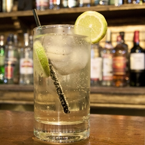
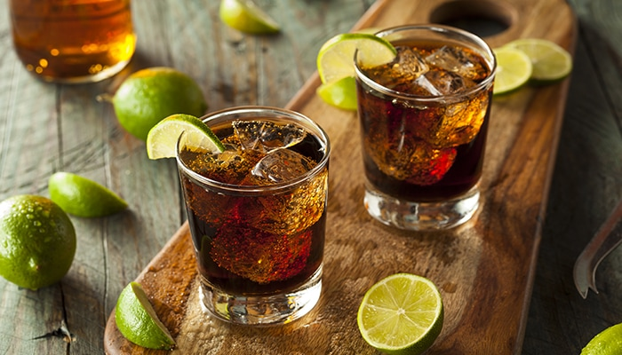
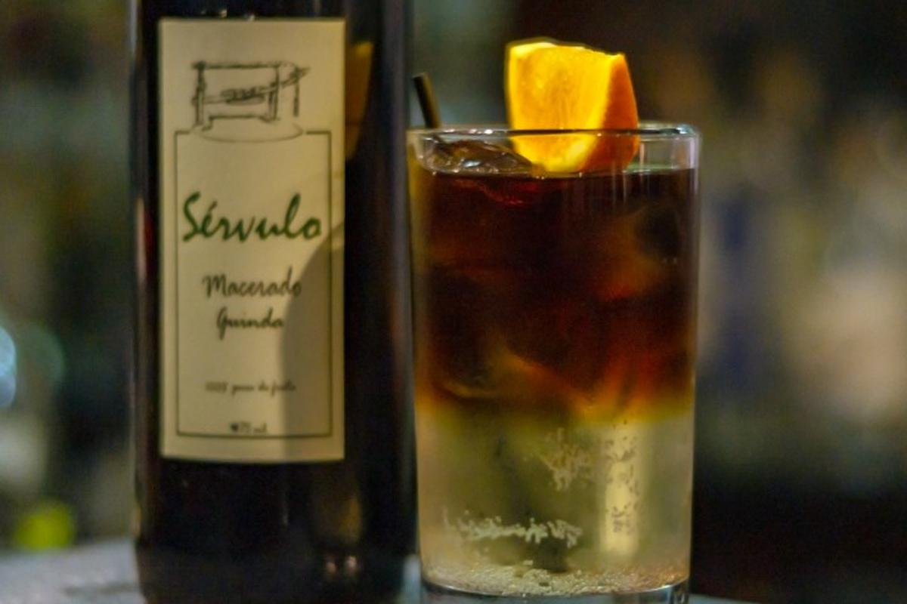
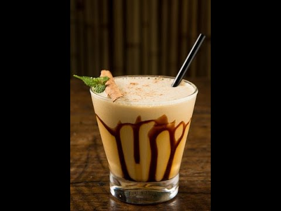
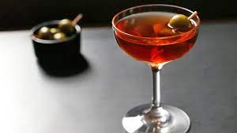
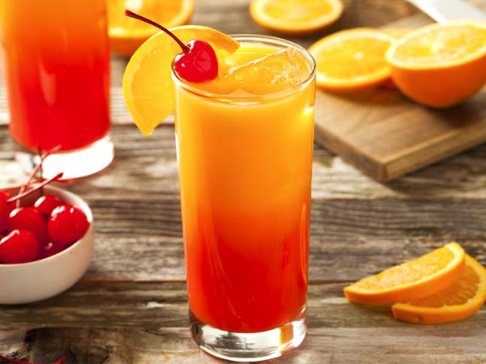
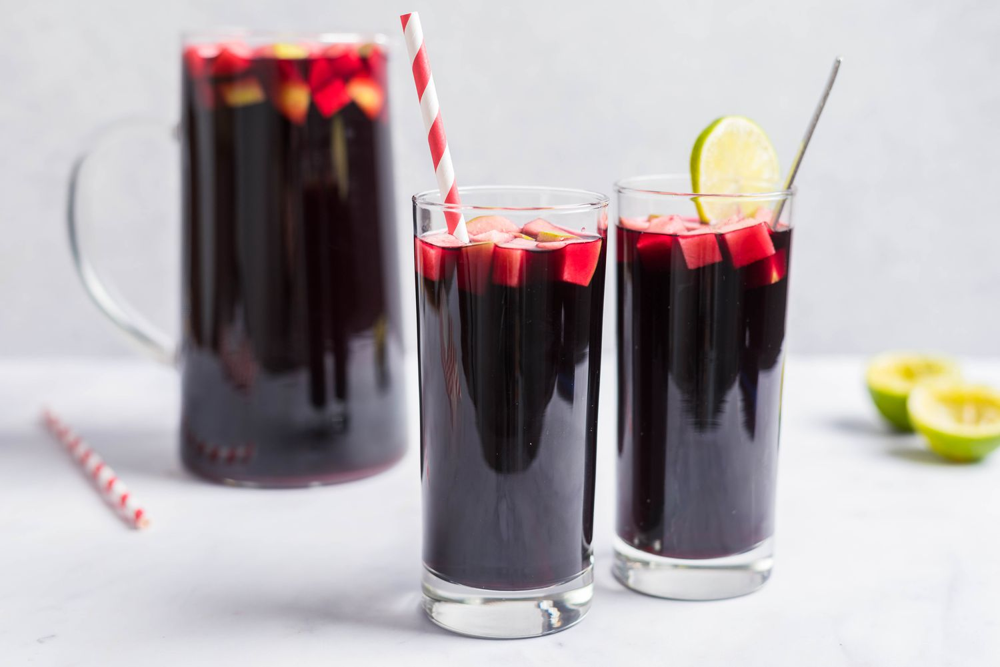
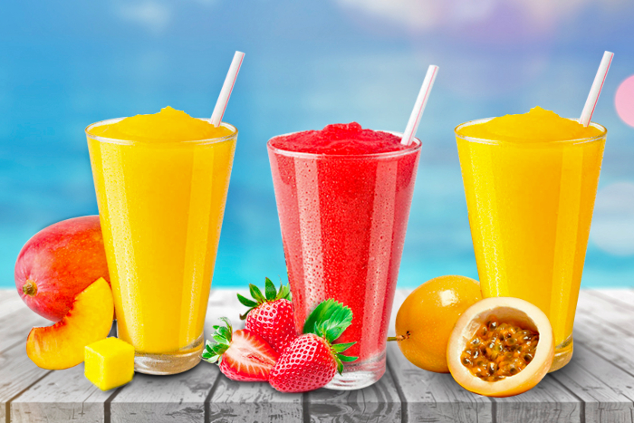
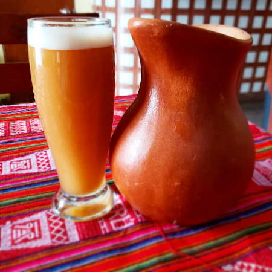
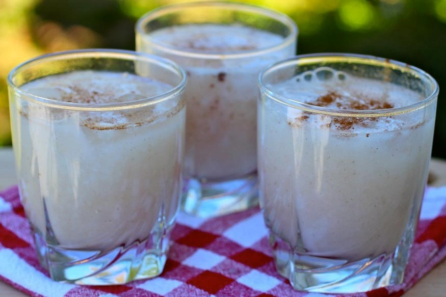

4 onzas de pisco puro (es decir del pisco obtenido de una sola variedad de uvas pisqueras
1 onza de jarabe de goma
1 onza de jugo de limón
½ clara de huevo
2 cubos de hielo (opcional)
2 gotas de amargo de angostura (opcional)
Preparación:
Poner en una coctelera o en una licuadora todos los insumos esenciales en el siguiente orden: primero el pisco, luego el jarabe de goma, a continuación el jugo de limón, y finalmente la clara de huevo.
Si desea poner los cubos de hielo.
Si se utiliza coctelera batir por 10 segundos. Si se utiliza licuadora licuar durante cinco segundos.
Servir en dos tiempos: primero servir la copa hasta la mitad, pausar y luego completar llenando la otra mitad.
Si desea decorar cada copa con dos gotas de amargo de angostura.
Disfrutar y beber con moderación.
Chilcano

Ingredientes:
2 oz (60 ml) pisco
0,75 oz (20 ml) jugo de limón
2 oz (60 ml) ginger ale
3 o 4 gotas de angostura
rodajas de limón para decorar
3 cubos de hielo
0,5 oz (15 ml) granadina (opcional)
Preparación:
Para hacer el trago, en un shaker de barman, pon unos cubos de hielo, pisco, jugo de limón y gotas de angostura. Luego, agita fuerte por unos 20 segundos.
Agrega 3 cubos de hielo picado en un vaso.
Vierte el trago sobre el hielo y rellena con el ginger ale. (Opcionalmente puedes añadir la granadina).
Decora con una o dos rodajas de limón
Machu picchu
Ingredientes:
2 onzas de pisco torontel
5 onzas de jugo de naranja
½onza de crema de menta
1 onza de jarabe de granada
5 cubos de hielo
Preparación:
En una copa hurricane o pera colocar los granos de granada, el pisco y el jugo de naranja. Mezclar.
Añadir el hielo y por las paredes de la copa vertir el jarabe de granada para luego, con ayuda de una cucharilla, colocar la crema de menta.
Terminar la decoración con una medialuna de naranja.
Al momento de beber, desplazar el sorbete (de metal o material reutilizable) de abajo hacia arriba para poder disfrutar de los tres sabores.
Peru libre

Ingredientes:
1 parte de pisco (Las medidas pueden variar, si se quiere más fuerte puede ser 1 x 3, y si se quiere más suave 1 x 5.)
4 partes de Coca Cola
Un chorro de zumo de limón
Hielo al gusto
Preparación:
En un vaso largo añadir cubos de hielo al gusto
Verter el pisco e inmediatamente la Coca Cola o con cualquier bebida gaseosa oscura
Finalmente una gotas de limón y removemos suavemente
Sol y sombra

Ingredientes:
1 ½ oz pisco puro de quebranta
1 ½ oz licor de guinda
¼ oz jugo de limón
10 cubos de hielo
10 oz ginger ale
2 rodajas de naranja
Preparación:
Distribuya en dos vasos altos el pisco, el licor de guinda, el jugo de limón, el hielo y el ginger ale
Mezcle con una cucharilla de bar
Agregue las rodajas de naranja y decore con removedores. Sirva.
Cóctel de algarrobina

Ingredientes:
6 oz pisco puro de quebranta
3 oz algarrobina
2 oz jarabe de goma
8 oz leche evaporada
2 huevos
16 cubos de hielo
Canela en polvo
Preparación:
Licúe de ocho a 10 segundos el pisco, la algarrobina, el jarabe de goma, la leche evaporada, los huevos y los cubos de hielo
Sirva colando en cuatro copas previamente enfriadas
Decore con la canela en polvo.
Capitan Coctel

Ingredientes:
45 mL pisco
30 mL vermut dulce
2 golpes amargos de Angostura
Preparación:
Llena un copa coupé con hielo y apartar para que se enfríe.
En un vaso mezclador agregue el pisco, el vermut dulce y los amargos y llene el vaso con hielo.
Revolver con una cuchara de bar durante 20-25 segundos.
Vierta hielo de la copa y cuele la bebida del vaso mezclador.
Decorar con una cereza y servir.
Pisco Sunrise

2 oz. pisco.
4 oz. de jugo de naranja.
3/4 oz. jarabe de granadina.
Rodajas de naranja (opcional).
Cerezas (opcional).
Hielo
Preparación:
Primero tomaremos nuestro vaso, o todos los vasos donde prepararemos los cócteles y verteremos ¾ de onza intentando evitar que manche los lados del vaso, sólo debe caer en el fondo. Si no tenemos un medidor en onzas, podemos utilizar una cucharada y media (22 ml. aproximadamente).
Ahora llenaremos el vaso con cubos de hielo.
Ahora añadiremos las dos onzas de pisco, lo que es el equivalente a dos cucharadas o 30 ml. aproximadamente. Podemos utilizar el pisco de nuestra preferencia, debemos considerar que el pisco que utilicemos influirá en el resultado final.
Rellenaremos el resto del vaso con jugo de naranja, son aproximadamente cuatro onzas por cóctel (120 ml.). Es muy recomendable utilizar jugo de naranja natural que hayamos exprimido nosotros mismos. Pero una naranjada que compremos en el supermercado puede funcionar, aunque no obtendremos el mejor sabor. Si nuestro jugo de naranja es un poco ácido, no hay problema, el jarabe le dará el dulzor necesario.
Chicha morada

1 kilo de maíz morado
1 piña (cáscaras y restos de la fruta)
1/4 de kilo de membrillo
3 litros de agua
10 gramos de canela entera
8 unidades de clavos de olor
Azúcar
3 limones
Preparación:
Desgranar el maíz morado.
Colocar el maíz morado en una olla.
Añadir la cáscara de piña, el membrillo y el agua.
Llevar al fuego.
Añadir la canela y clavo.
Hervir por 45 minutos.
Dejar enfríar por un par de horas.
Colar.
Endulzar al gusto.
Agregarle el jugo de limón. Remover.
Servir.
Cremolada

Ingredientes:
3 tazas de jugo de naranja
55 gramos de azúcar
2 cdas de leche fresca
1/2 cdita de esencia de vainilla
1/2 taza de agua
Preparación:
En un bowl coloca el jugo, la leche, el azúcar, el agua y la vainilla. Mezcla muy bien hasta combinar todo. Por supuesto, también puedes hacer uso de la licuadora.
Seguidamente vierte la mezcla anterior en otro recipiente (resistente al frío). Deja en el congelador hasta que logre estar compacta.
Pasado el tiempo, retira del congelador y parte la mezcla congelada en trozos. Licua hasta obtener una consistencia granulada.
Chicha de jora

Ingredientes:
1 kg de cebada
1 kilo de maíz de jora
½ kilo de azúcar
100 gramos de atado de dulce (chancaca)
10 litros de agua
1 cucharada de clavos de olor
Preparación:
Para empezar, dispón de una olla y procede a tostar el maíz de jora y luego la cebada. Para este paso es importante que no utilices aceite ni grasas.
Después, en otra olla coloca el maíz de jora y échale agua, déjalo remojar por un lapso de 35 minutos. Pasado este tiempo cambia el agua y remójalo por 35 minutos más.
De allí, pásalo por un colador y deposítalo en una olla grande junto a la cebada y los clavos de olor. Coloca 10 litros de agua y cocínalo por 8 horas a fuego medio.
Así mismo, durante el tiempo cocción debes remover constantemente con una cuchara grande (de madera de preferencia), para que la mezcla no se pegue y el maíz no se achique.
Ahora bien, cuando veas que la preparación se ha reducido a la mitad, adiciona 5 litros de agua tibia para que mantenga su temperatura y continúe la cocción.
Una vez se haya cumplido las 8 horas, incorpora el atado de dulce (chancaca) y el azúcar. Revuelve bien la mezcla y deja que se enfríe.
Seguidamente, cuela la chicha y deposítala en una vasija de barro de preferencia y cúbrela con una tela delgada para que la misma pueda respirar y no se malogre.
Para terminar, deja en reposo la chicha de jora por 8 días, hasta obtener un buen grado de fermentación y sabor. Remuévela diariamente y pasado los días degústala, ya sea después del almuerzo o simplemente para aplacar la sed. Salud!
Masato

Ingredientes:
3 kilos de yuca
500 gramos de azúcar
500 ml de agua hervida
Preparación:
¿Cómo hacer el masato de la selva? Es muy simple; pela y lava los 3 kilos de yuca. Luego deja hervir hasta estar cocidas (al ablandarse).
Ahora, tritura toda la yuca y agrega el azúcar poco a poco. Seguidamente, añade el agua y mezcla todo muy bien hasta tener una masa blanda.
De inmediato, vierte en un recipiente, de barro si es posible, y deja macerar durante aproximadamente una semana.
Después de haberse macerado durante el tiempo recomendado, mezcla muy bien la masa con un poco más de agua y cuela para evitar impurezas.